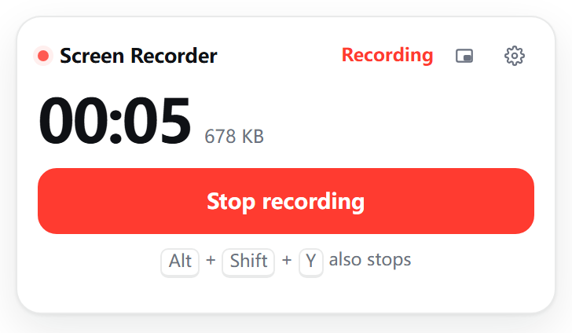

No login, no upload, no time limit, no watermark. Recording is written to your disk as you go, so a crash or a closed window does not lose the take.

Captures the tab and its sound. The page keeps playing out loud while it records.
Bytes hit the disk every second. If the browser dies, the next launch offers the partial file back.
Saved recordings carry the correct duration, so players show the length and the progress bar works.